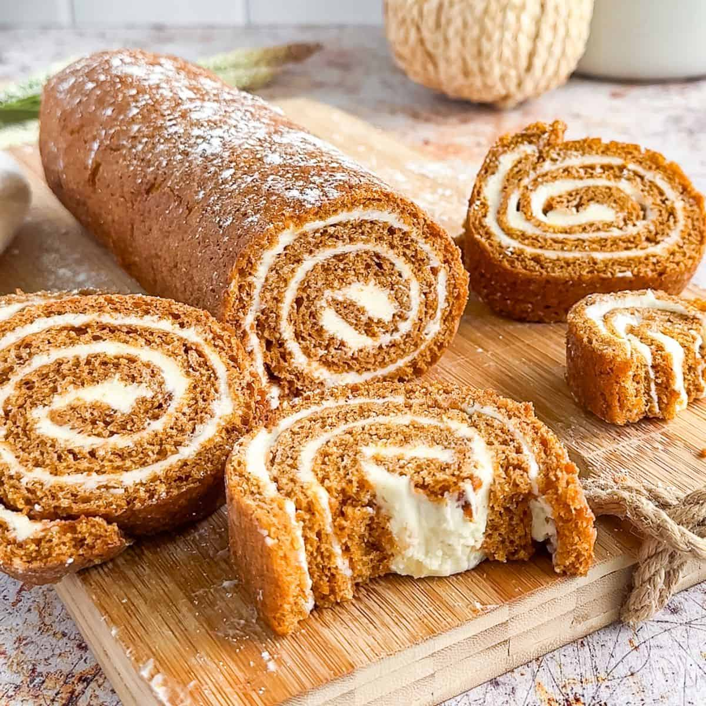

Pumpkin Roll

For Cake:
- 3⁄4 cup all purpose flour
- 1⁄4 teaspoon salt
- 1 teaspoon baking soda
- 1 1⁄2 teaspoons ground cinnamon
- 1⁄2 teaspon nutmeg, freshly ground
- Pinch of ginger and/or cloves (optional)
- 1 cup granulated sugar
- 3 large eggs
- 2⁄3 cup pumpkin puree
- 1 teaspoon vanilla extract
For Frosting:
- 8 ounces cream cheese, softened
- 2 tablespoon butter, softened
- 1 teaspoon vanilla extract
- 1 cup powdered sugar, plus more for dusting
For Cake: Preheat oven to 350°F. Line a jelly roll pan (15 x 10") with parchment paper, leaving an extra inch of parchment sticking up on both long sides of the pan so that you can easily lift the cake out after baking. (You can VERY lightly grease the parchment paper, if you want to, but you don't need to)
In a small bowl, whisk together the flour, salt, baking soda, cinnamon, and spices. In a separate bowl mix the eggs, sugar, vanilla and pumpkin until smooth. Add dry ingredients to the bowl and stir until combined and no dry streaks remain.
Spread the batter evenly in the prepared pan. Bake for 14-15 minutes until a toothpick inserted in the center comes out clean. Additionally, if you press on the cake with a finger, it should bounce back without leaving an indent in the cake and shouldn't leave any sticky residue on your finger. If your finger comes off sticky, the pumpkin roll isn't done and will stick to the parchment paper when rolled.
Immediately lift the parchment paper and hot cake out of the pan and onto a flat (heat-safe) surface. Let the cake cool for a few minutes. While the cake is still warm but no longer hot, use your hands to gently and slowly roll the cake (and parchment paper) all the way up. Allow it to cool completely, on top of a wire cooling rack. (This allows it to cool underneath the roll and keeps the cake from sweating).
For Frosting: Mix the cream cheese, butter, vanilla, and powdered sugar together with an electric mixer until it is fluffy and smooth.
Once the cake roll is cooled completely, unroll it very carefully. Gently smooth the filling in an even layer over the cake. Roll up the cake without the parchment paper. Cover with plastic wrap and refrigerate for at least 1 hour, overnight is better, before serving.